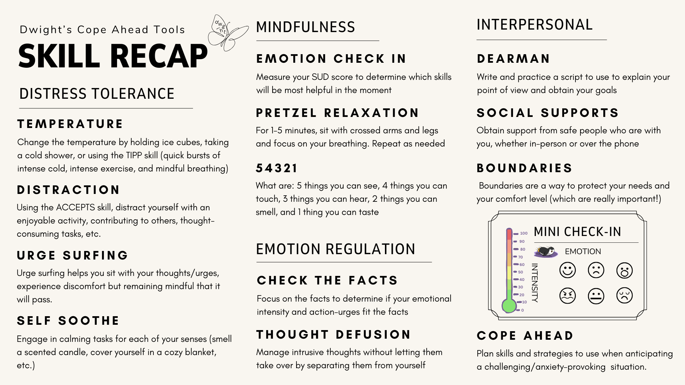

Marsha Linehan, founder of DBT, has a great resource for utilizing Check the Facts in her DBT manual. Check it out here!
Check out this resource to learn about the Cope Ahead Skill

^You can use this resource to create your cope ahead plan. Feel free to print it out to highlight the skills that might be helpful and write in your own skills on the back. Use this printable PDF version to download.